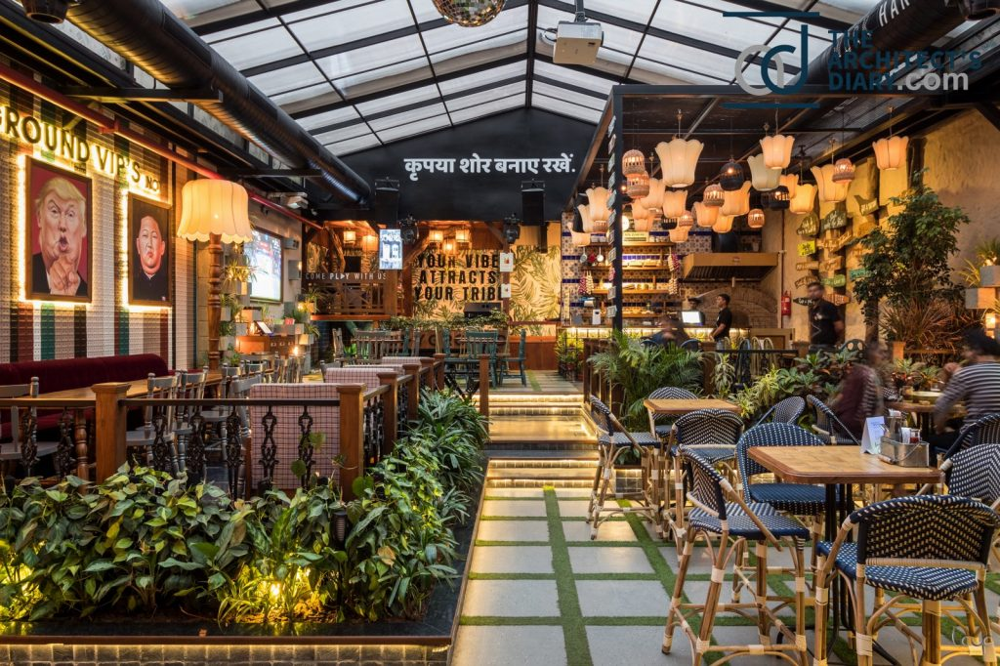

At White Chillies, we believe in serving more than just coffee and delicious meals—we create experiences. Established with a passion for flavors and a love for community, our cafe is the perfect place to relax, unwind, and enjoy moments with your loved ones. Whether you're here for a quick coffee break or an intimate dinner, we ensure a warm and inviting atmosphere.
Our menu is crafted with love, bringing you a fusion of classic favorites and innovative dishes, all made from the freshest ingredients. From hand-crafted beverages to gourmet dishes, every bite and sip at White Chillies tells a story of quality and passion.
Visit us today and be part of the White Chillies experience!